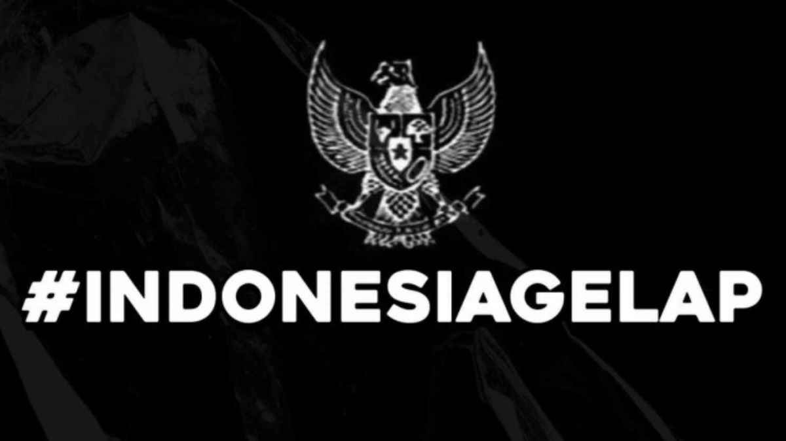

Pancasila di Pidato, Korupsi di Meja: Negara Kita Beneran Baik-Baik Aja?
Oleh: Bung Hannan | 28 Juli 2025
Dari SD kita udah disuruh hafal Pancasila. Katanya, itu dasar negara, jiwa bangsa, harga mati. Tapi coba deh, buka berita pagi ini sambil ngopi. Ada berita pejabat ketangkep korupsi, rakyat kecil digusur, hukum yang tajam ke bawah tapi tumpul ke atas. Terus kita mikir, Pancasila yang kita hafal itu sebenernya buat siapa?
Sila pertama, "Ketuhanan Yang Maha Esa". Harusnya jadi landasan moral. Tapi kok bisa ya, pejabat yang rajin ibadah, pidatonya religius, tapi tangannya enteng banget 'nyolong' uang rakyat? Sila kedua, "Kemanusiaan yang Adil dan Beradab". Adil dan beradab buat siapa? Buat mereka yang punya kuasa dan uang, atau buat semua? Realitanya, keadilan seringkali jadi barang mahal yang nggak semua orang bisa beli.
"Katanya 'Keadilan Sosial bagi Seluruh Rakyat Indonesia', tapi kok rasanya kayak 'Keadilan Sosial bagi yang Punya Akses Aja'."
Belum lagi sila ketiga dan keempat. "Persatuan Indonesia" seringkali cuma jadi slogan buat meredam kritik. Kalau ada yang protes kebijakan, langsung dicap anti-persatuan, anti-NKRI. "Kerakyatan yang Dipimpin oleh Hikmat..." juga sering jadi tanda tanya besar. Kebijakan yang dibuat beneran hasil 'hikmat kebijaksanaan' untuk rakyat, atau cuma buat kepentingan segelintir oligarki?
Ini bukan berarti Pancasila itu salah. Pancasila itu sempurna sebagai ideologi. Yang salah adalah ketika ia cuma jadi pajangan di dinding kantor dan bahan pidato, tapi nilainya dikhianati setiap hari di meja-meja kekuasaan. Sebagai mahasiswa, tugas kita bukan cuma hafal. Tugas kita adalah nagih janji-janji Pancasila itu kepada negara. Kita yang harus jadi pengingat bahwa Pancasila itu untuk dipraktikkan, bukan cuma buat dikhotbahkan.